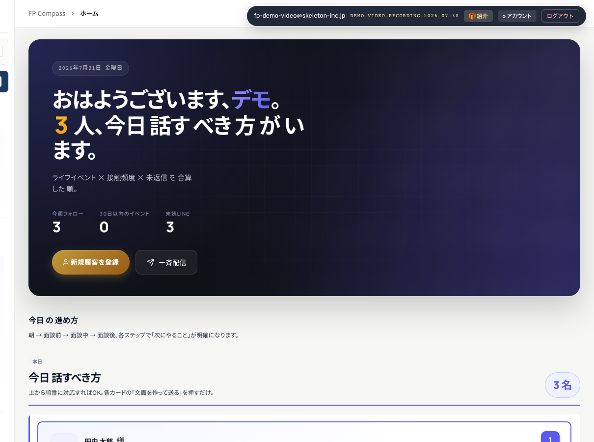
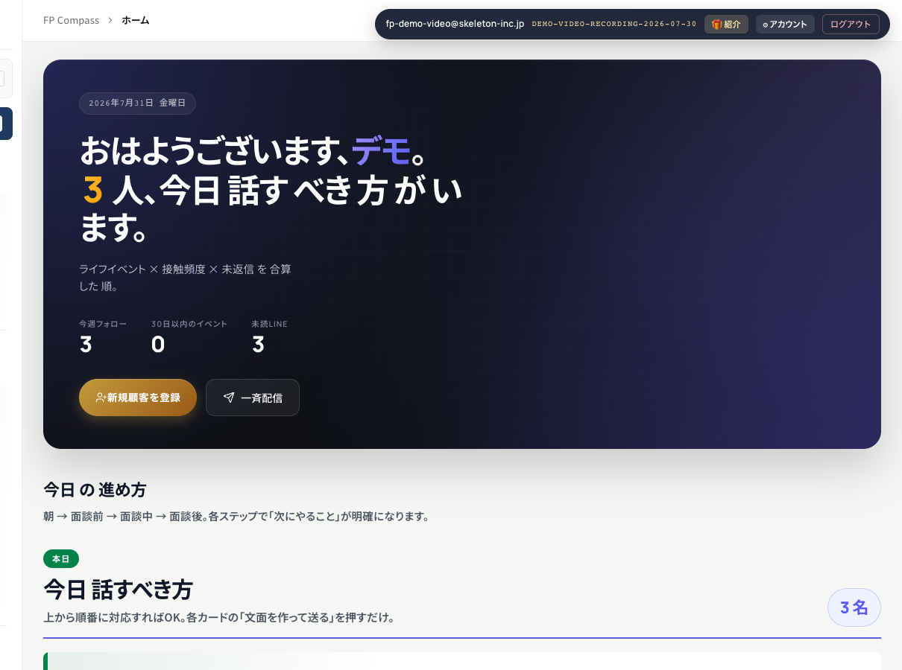

FP Compass TOP page — Before / Afterv20260731K
現行 UI を base に detail-up、 40〜60代 FP先生 が 「どこ 押せば いい か」 迷わない よう 文字 · 余白 · 階層 を 底上げ。
変更点 (7 項目)
- 「今日 話すべき方」 見出し 22 → 30 px (font-weight 700 → 900)
- section eyebrow pill (灰 → 緑) で 現在 view の 位置 が 一目 で わかる
- 顧客 行 高さ 14 → 26 px (min-height 68 px)、 名前 font-size 15 → 18 px
- 1 行目 顧客 に 左 6 px 緑 border + gradient で 「最優先」 が 視覚的 に 主張
- action button min-height 48 px + font-weight 800、 tap しやすさ
- workflow step (5 ステップ) 130 px 高、 active step は 緑 background + shadow
- hover 時 border 緑 + translateY(-2 px) で 「押せる」 の feedback 追加
1. TOP page 全体 (上部)
2. 上部 workflow / hero
BEFOREdetail-up 適用前

AFTERv20260731K 適用後
